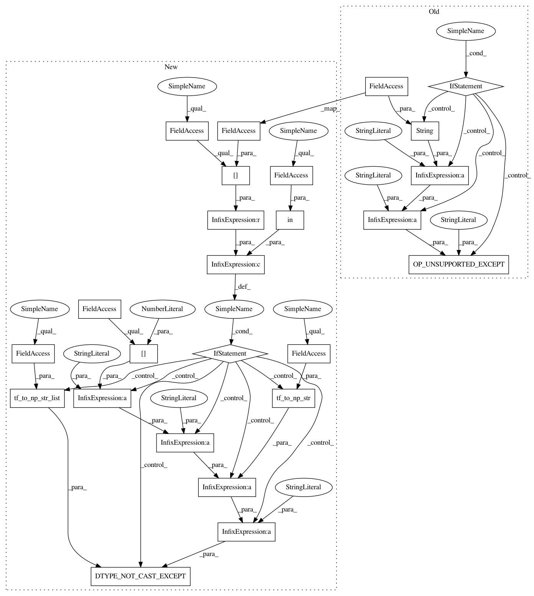

c74883931cb40748eaaccce9fd1117303c41a881,onnx_tf/handlers/backend/equal.py,Equal,args_check,#Any#Any#,21
Before Change
tf.qint32, tf.string, tf.bool, tf.complex128
]
x = kwargs["tensor_dict"][node.inputs[0]]
if x.dtype not in supported_dtype:
exception.OP_UNSUPPORTED_EXCEPT(
"Equal inputs in " + str(x.dtype) + " which", "Tensorflow")
@classmethod
def version_1(cls, node, **kwargs):
return cls.limited_broadcast(node, **kwargs)
After Change
// throw an error if the data type is not natively supported by
// Tensorflow, cannot be safely cast, and auto_cast option is False
if x.dtype in cls.cast_map and cls.cast_map[x.dtype] is None:
exception.DTYPE_NOT_CAST_EXCEPT(
"Equal input " + node.inputs[0] + " with data type "" +
data_type.tf_to_np_str(x.dtype) + """,
data_type.tf_to_np_str_list(cls.supported_types))
@classmethod
def _common(cls, node, **kwargs):
def dtype_cast(x, y):
In pattern: SUPERPATTERN
Frequency: 3
Non-data size: 25
Instances
Project Name: onnx/onnx-tensorflow
Commit Name: c74883931cb40748eaaccce9fd1117303c41a881
Time: 2020-08-26
Author: chhuang@us.ibm.com
File Name: onnx_tf/handlers/backend/equal.py
Class Name: Equal
Method Name: args_check
Project Name: onnx/onnx-tensorflow
Commit Name: 9c62f4f3d7c6b98f311ef82863281b088ce4d48a
Time: 2020-10-02
Author: chhuang@us.ibm.com
File Name: onnx_tf/handlers/backend/clip.py
Class Name: Clip
Method Name: args_check
Project Name: onnx/onnx-tensorflow
Commit Name: c74883931cb40748eaaccce9fd1117303c41a881
Time: 2020-08-26
Author: chhuang@us.ibm.com
File Name: onnx_tf/handlers/backend/equal.py
Class Name: Equal
Method Name: args_check
Project Name: onnx/onnx-tensorflow
Commit Name: c74883931cb40748eaaccce9fd1117303c41a881
Time: 2020-08-26
Author: chhuang@us.ibm.com
File Name: onnx_tf/handlers/backend/cumsum.py
Class Name: CumSum
Method Name: args_check